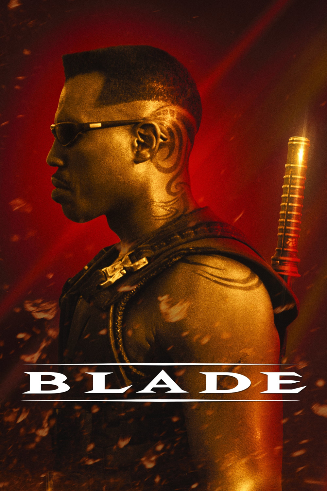

Мировая премьера: 21 августа 1998
Слоган: Сила бессмертного. Душа человека. Сердце героя.
Сюжет: Получеловек-полувампир Блэйд обладает силой, превосходящей возможности как смертных, так и порождений ночи. Под руководством своего наставника и охотника на вампиров Уистлера он оттачивает смертоносное мастерство, посвятив жизнь борьбе с кровожадными созданиями. Когда вампир Дьякон Фрост объявляет войну человечеству, Блэйд становится последней надеждой людей на спасение.
Режиссёр: Стивен Норрингтон
В основе: Комиксы о Блэйде (США, выходят с 1973, издательство "Марвел Комикс")
Серия: Блэйд
В ролях: Уэсли Снайпс, Стивен Дорфф, Крис Кристофферсон
| Уэсли Снайпс | Блэйд / Эрик Брукс |
| Стивен Дорфф | Дьякон Фрост |
| Крис Кристофферсон | Абрахам Уистлер |
| Н'Буш Райт | Доктор Карен Дженсон |
| Донал Лог | Куинн |
| Удо Кир | Гаитано Драгонетти |
| Арли Ховер | Меркурий |
| Кевин Патрик Уоллс | Инспектор Кригер |
| Тим Гини | Доктор Кёртис Уэбб |
| Трейси Лордс | Ракель |
| Санаа Лэтэн | Ванесса Брукс |
| Эрик Эдвардс | Пирл |
| Мэтт Шульц | Криз |
Бюджет: $ 45 млн.
Кассовые сборы в США: $ 70 млн.
Кассовые сборы в мире: $ 131 млн.
Продолжительность: 1 ч. 55 мин.
Рейтинг: 7.1